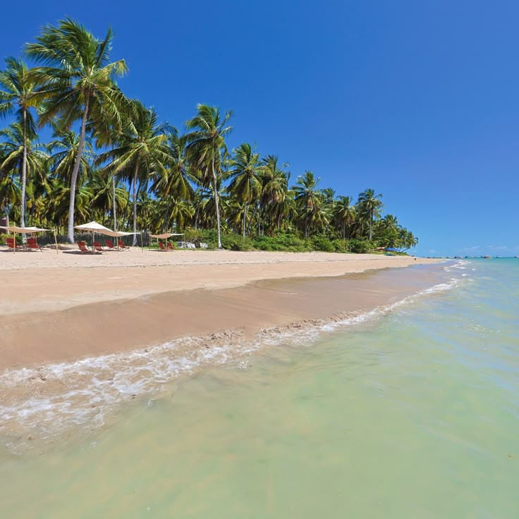
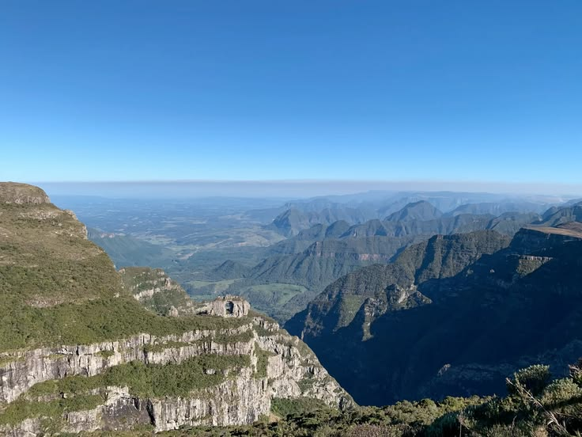
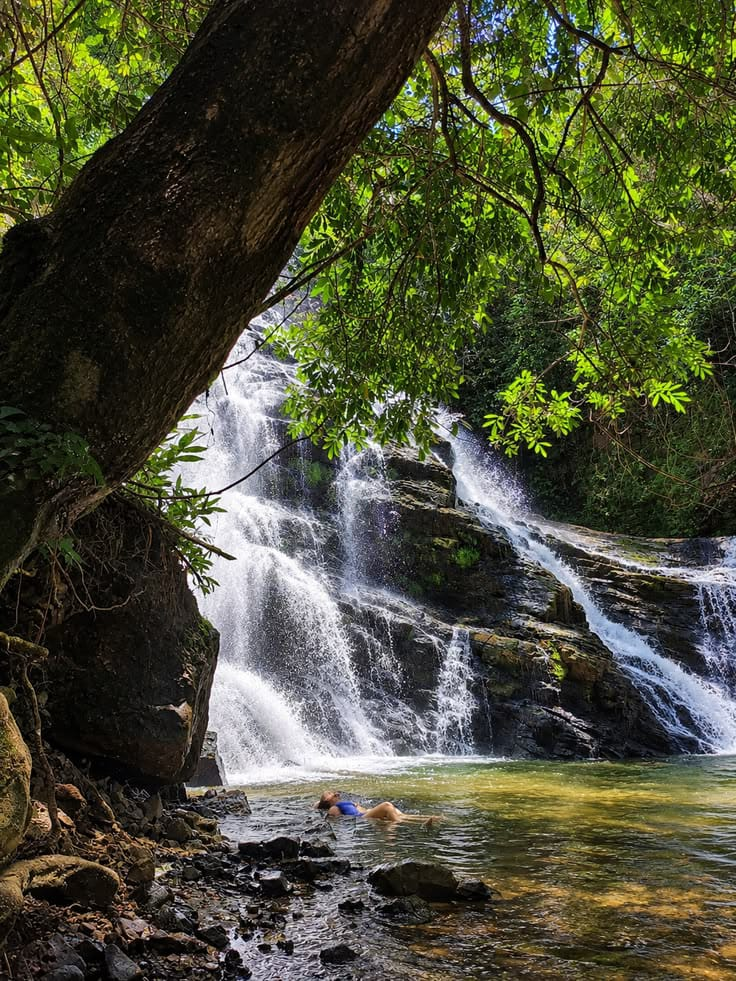
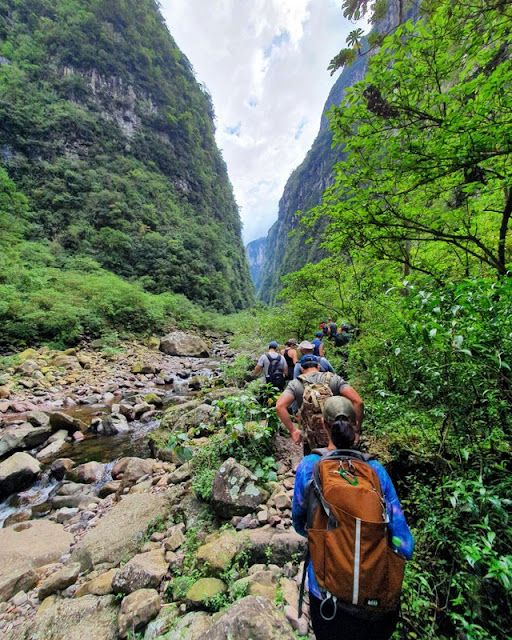
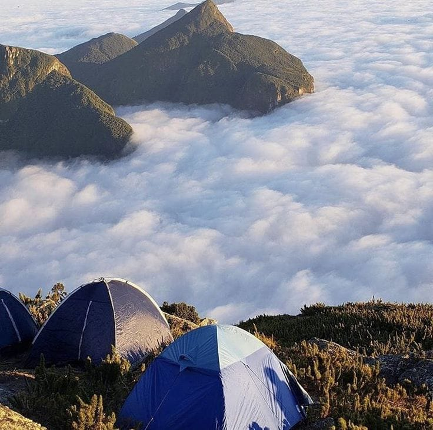

Descubra lugares incriveis, conecte-se com a natureza e encontre sua próxima aventura.
Explore diferentes destinos e experiências. Seja para relaxar, se aventurar ou conhecer paisagens incríveis, temos uma categoria perfeita para sua próxima viagem.

Aproveite praias paradisíacas, águas cristalinas, paisagens costeiras e momentos de descanso junto ao mar.

Descubra montanhas impressionantes, cenários naturais, clima agradável e vistas incríveis para apreciar.

Conheça cachoeiras, piscinas naturais e lugares perfeitos para se refrescar e relaxar em meio à natureza.

Caminhe por trilhas naturais, explore florestas e descubra caminhos que proporcionam experiências inesquecíveis.

Viva momentos especiais ao ar livre, acampe sob as estrelas e aproveite a tranquilidade da natureza.